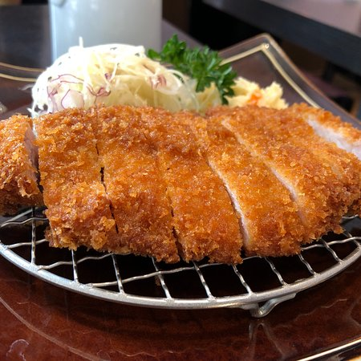

<main>
    <h1>Tonkatsu</h1>
    
    <p>This is using Panko, which is Japanese bread crumbs (really light and airy, more so than crackers), and thinly sliced boneless pork chops.</p>
    <h3>Details</h3>
    <ul>
        <li><strong>Prep Time:</strong> 25 mins</li>
        <li><strong>Cook Time:</strong> 15 mins</li>
        <li><strong>Total Time:</strong> 40 mins</li>
        <li><strong>Servings:</strong> 8</li>
    </ul>
    <h3>Ingredients</h3>
    <ul>
        <li>2 eggs</li>
        <li>1 teaspoon milk</li>
        <li>1/2 teaspoon minced garlic</li>
        <li>salt to taste</li>
        <li>1/2 teaspoon pepper</li>
        <li>1 1/2 cup panko bread crumbs</li>
        <li>1 cup vegetable oil for frying</li>
        <li>8 thin cut boneless pork chops</li>
    </ul>
    <h3>Directions</h3>
    <ol>
        <li>In a medium bowl, mix together the eggs, milk, garlic, salt and pepper</li>
        <li>Heat oil in a large heavy skillet over medium-high heat</li>
        <li>Place the panko crumbs in a shallow bowl</li>
        <li>Rinse pork chops with water, then dip in the egg mixture</li>
        <li>Coat with panko crumbs, dip in the egg mixture again, then coat with another layer of panko crumbs</li>
        <li>When the oil is very hot, place pork chops into the pan and fry for about 5 mins on each side until golden brown</li>
    </ol>
    <a href="../index.html">Return to main page</a>
</main>>